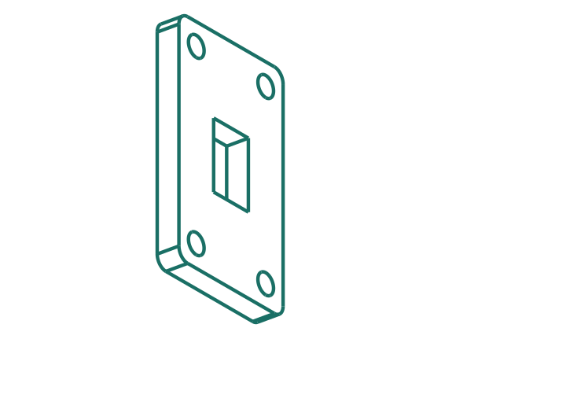
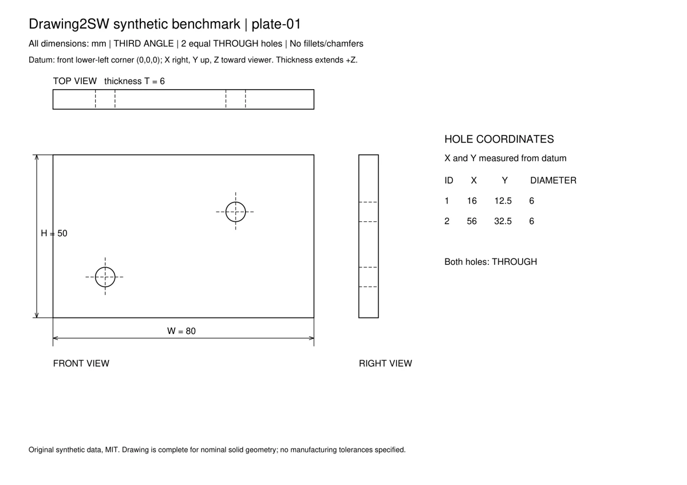

提取证据
原生尺寸、文字位置、可选 OCR，绑定原图哈希。
observations.json让 AI 关联视图和标注，让确定性脚本完成建模。每个特征都有来源，每次验证都有边界。
本地运行 · STEP 预览 · Windows + SolidWorks 原生建模

由仓库示例特征表实际生成；此展示不是模型读图准确率测试。
保留你已有的 CAD 工作方式，为读图、建模和验证增加明确的交接点。
原生尺寸、文字位置、可选 OCR，绑定原图哈希。
observations.json模型关联视图和尺寸，填写特征表，标出缺失和冲突。
part.json脚本计算相切与交点，生成 STEP，再驱动 SolidWorks。
STEP / SLDPRT测量属性、对比参考几何、复核投影，说明未验证项。
verification report这些数字描述工具链的测试覆盖。跨模型读图成功率仍待独立盲测。

回归测试把一个孔平移 2 mm。体积、表面积仍通过；与参考 STEP 的对称差比较能判出几何不一致。
合成集仅覆盖简单双孔板，外部图没有三维标准答案。尚不支持钣金、装配和自由曲面。OCR 本地推理为可选路径；普通投影不能直接验证剖视图。
推荐 Python 3.12。先验证 STEP 路径，再连接 Windows 上的 SolidWorks。
项目/.agents/skills/drawing2sw/进入 Skill 根目录执行右侧 PowerShell 命令。OCR 可选依赖单独安装。
powershell -ExecutionPolicy Bypass -File install.ps1
.venv\Scripts\python.exe scripts\check_env.py
.venv\Scripts\python.exe scripts\validate_feature_table.py examples\bracket_prismatic.json
.venv\Scripts\python.exe scripts\preview_cadquery.py examples\bracket_prismatic.json -o work\plate.step“用 drawing2sw 读取这张零件图，先列出证据和不确定项，再生成 STEP 预览。”
不能保证。Skill 提供共同的工具与流程，复杂图纸仍依赖视觉、空间推理和工具调用能力。当前没有经过统一验证的模型排名。
可以进行图纸预处理、证据校验和 CadQuery STEP 预览。生成原生 SLDPRT 需要 Windows 和可用的 SolidWorks 安装。
项目脚本在本地处理图纸，网站不接收图纸。你选择的 AI 服务可能接收图纸内容，取决于模型和宿主的运行方式与隐私设置。